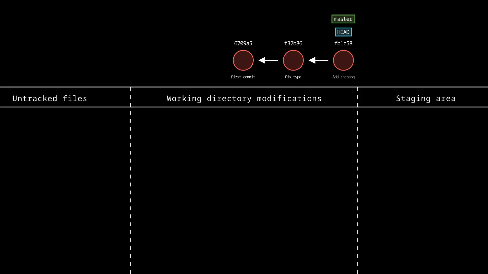
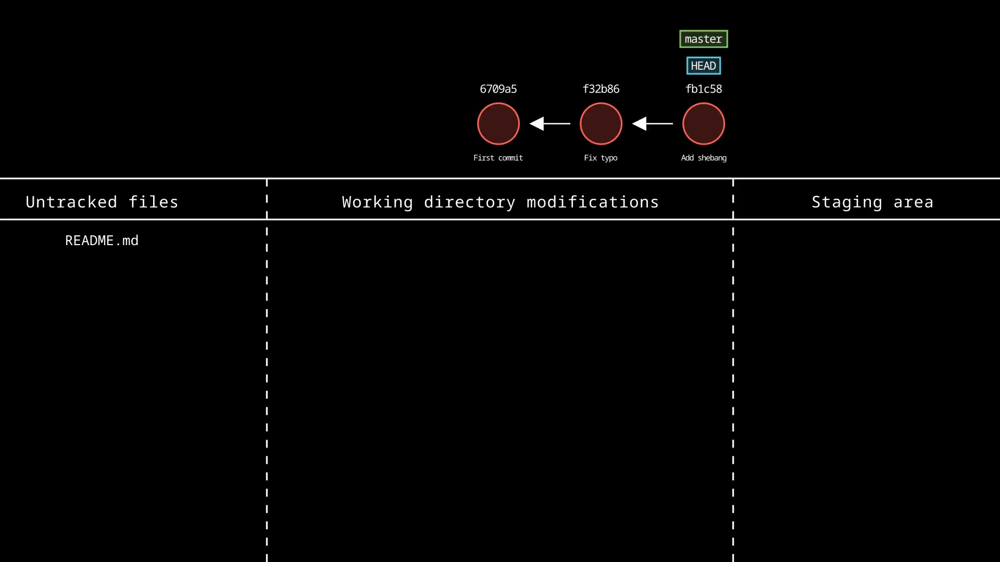
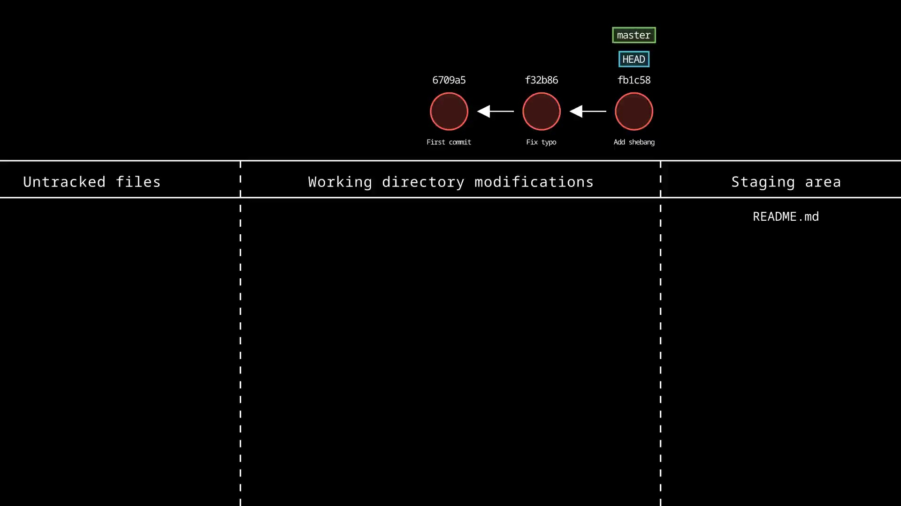
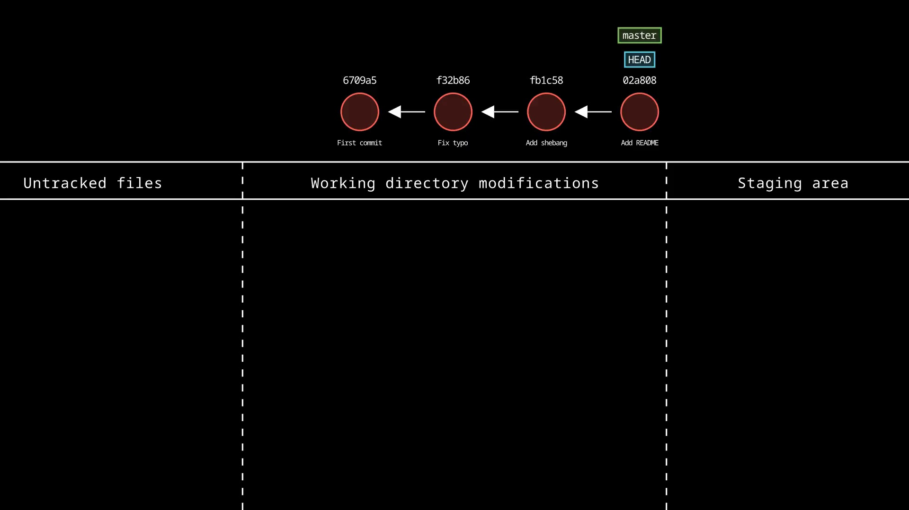
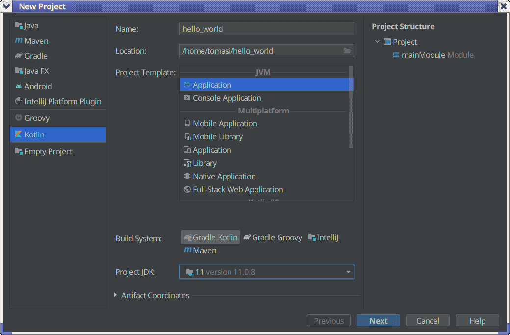

Laboratory 1: Git and GitHub
Calcolo numerico per la generazione di immagini fotorealistiche
Maurizio Tomasi maurizio.tomasi@unimi.it
Miscellanea
Communicate to the teacher by the next exercise the composition of your group and the chosen language
The exercises end at 12:30, but if you complete the work early you can leave earlier
Project management
Overview
In this course we will develop a complex program to generate photorealistic images;
Managing complex programs requires a series of measures:
Automatic code quality checks
Change monitoring
Code visibility to other users
Access to documentation
How have you managed your projects so far?
Version control systems
A version control system (VCS) records changes made to the code;
Possibility to undo changes;
Release of “releases” (e.g., 1.0, 1.1, 1.2) with the possibility of retrieving older ones;
Ensures that multiple programmers can modify the code simultaneously (with some caveats).
How to use a VCS
A VCS manages a directory, with all its subdirectories;
When creating/modifying a file within the directory, you ask the VCS to record the change;
The VCS takes “snapshots” of the directory, which it saves in its own database.
Usage example
I create a directory
hello_worldand a filehello_world/hello.py:I invoke the VCS to “save” a snapshot of the
hello_worlddirectoryI modify the file
hello_world/hello.pyto correct the message:I invoke the VCS again to “save” a new snapshot of the directory
Usage example
At the end of the example, the VCS database contains two snapshots:
File
hello_world/hello.pywith this content:File
hello_world/hello.pywith this content:
Commit
Each snapshot is always associated by VCS with some additional information:
- User who performed the snapshot
- Date and time of the snapshot
In VCS jargon, a snapshot is called a commit.
A simple VCS (1/3)
We can create a simple VCS in Linux/Mac OS X using the Bash/Zsh shell and two command-line programs:
date(prints date and time) andwhoami(prints the user’s name).We use the ability of shells like Bash to substitute commands using
$():
A simple VCS (2/3)
This command creates a backup copy of the files in the current directory:
The command creates a
.tarfile in a/vcsdatabasefolder containing all the files of the current directory.The file name contains the user’s name and the date; the latter is encoded as a long number (e.g.,
20240926155130for the date 2024-09-26, 15:51:30)
A simple VCS (3/3)
It is always useful to associate a brief comment with a commit. We
extend our idea into a shell script called my_vcs.sh:
#!/bin/bash
readonly destpath="$1"
readonly tag="$2"
if [ "$tag" == "" ]; then
echo "Usage: $0 PATH TAG"
exit 1
fi
# Create the folder, if it does not exist
mkdir -p "${destpath}"
readonly filename="${destpath}/$(date +%Y%m%d%H%M%S)-$(whoami)-${tag}.tar"
tar -c -f "$filename" *
echo "File \"$filename\" created successfully"Example
Advantages of a VCS
We have a backup of the code: if we accidentally delete a source file from the working directory, we can recover it from
/vcsdatabase.If we realize that a modification does not work, we can restore the previous version.
We can reconstruct the history of the code development simply by looking at the list of files in
/vcsdatabase:20240926153856-tomasi-first-release.tar 20240926155130-tomasi-fix-bug.tarIf we discover the existence of a bug, we can check backwards to determine when the bug was introduced.
Problems with our VCS (1/4)
If a VCS is being used, it is probably because the project is complex and has many files.
Usually, modifications affect one or just a few files at a time.
However, our implementation with
tarsaves all files every time: this risks occupying a lot of space, and it is not necessary!There is also another issue: if the database contained the files
20240926153856-tomasi-first-release.tar 20240926155130-tomasi-fix-bug.tarand we wanted to understand what the “bug” was and how it was fixed, we would have to compare the files in the latest
.tarone by one with their counterparts in the previous.tarto see what changed.
Problems with our VCS (2/4)
- We could write a shell script that invokes
tar, saving only the files that were actually modified (for example, by checking the modification date of each file withls -l). - But even this is not optimal: a very large file may have changed in just one line, yet we would save the entire file!
- (There are files with tens of thousands of lines of code. The amalgamation of SQLite3 is a C language file with 220,000 lines.)
Problems with our VCS (3/4)
Complex modifications are usually implemented gradually; for example:
A modification that adds the ability to save work to a file;
A modification that adds the ability to load a file.
If each of these tasks required a week of work, the programmer might want to perform a backup after completing the first step, before moving on to the second.
Our system does not allow logically related modifications to be grouped together: each
tarfile is independent of the others!
Problems with our VCS (4/4)
Our system does not provide any control when multiple people work on the project.
Consider this situation:
A starts from the
.tarwith the latest version of the code to fix a bug.B starts from the same
.tarto add a new feature to the program.A uses
my_vcs.shto save their version with the bug fixed.B uses
my_vcs.shto save their version with the new feature.
In the end, there will be a
.tarfile with the bug fixed but without the new feature, and a.tarfile with the new feature but where the bug is still present.
Professional VCS
There are solutions for each of the problems we identified in our VCS.
Modern VCSs all have these features:
They save only the parts of files that have changed (using tools similar to the
diffcommand found in Linux and Mac OS X).They allow logically related commits to be grouped together (e.g., saving/loading files).
When multiple programmers work on the same file, they check the consistency of modifications.
Types of VCS
- Centralized
-
The database (our
/vcsdatabasedirectory) resides on a remote computer that all programmers access. - Distributed
- The database resides on the local computer; multiple programmers working on the same code each have their own database, which they synchronize with each other periodically (usually with an explicit command).
Some important VCS
| Name | Kind | Example |
|---|---|---|
| CVS | Centralized | OpenBSD (link) |
| Subversion | Centralized | FreePascal (until 2021), GCC (until 2019) |
| GNU Bazaar | Distributed | Ubuntu Linux (until 2018) |
| Mercurial | Distributed | Facebook, Mozilla, GNU Octave (link) |
| Fossil | Distributed | SQLite (link) |
| BitKeeper | Distributed | Kernel Linux (until 2005) |
| Git | Distributed | Too many! |
Git
- Created by Linus Torvalds, the creator of Linux
- Distributed VCS
- Extremely versatile…
- …but very complex to use!
- Today, it is the standard among VCSs (unfortunately)
Using Git (1/3)
On Ubuntu/Mint Linux systems, install Git with
sudo apt install gitAs soon as it is installed, you need to configure Git with your identity. Run these commands:
git config --global user.email "YOUREMAIL@BLABLA" git config --global user.name "First Last"This allows Git to associate your name with the actions you perform on the repository. (Obviously, this is unnecessary if you know you’ll always be the only one working on the repository, but Git is designed to be a collaborative tool.)
Using Git (2/3)
To create a database in a directory, run
git initThis will create a hidden
.gitdirectory (equivalent to our/vcsdatabase).The first time you run
git init, it may ask you to specify your name and email address.
Using Git (3/3)
When you want to make a commit, you must perform two operations:
git add FILENAME1 FILENAME2… git commitThe first command prepares the files for “taking the snapshot,” copying them to the staging area, while the second performs the actual snapshot.
The
git commitcommand opens an editor to enter a description.
How Git Works (1/2)
Each commit/snapshot is identified by a long hexadecimal number called a hash (e.g.,
2f2f2cb36bbf02eaf5629b6295e9a47684c16905).Each commit has two associated hashes:
- Its own hash (obviously!)
- The hash of the previous commit
The hash of the latest commit is called
HEAD, and it can be viewed using the commandgit rev-parse HEAD
How Git Works (2/2)
When you run git commit, the following happens:
gitanalyzes which files have been modified compared to the last commit (indicated byHEAD);- It creates a new commit, saving only the changes relative to the
HEADcommit; - It saves the
HEADvalue in the commit as the “previous hash”; - It generates a new hash for the commit;
- It updates
HEADto point to the new hash.
Example

Example

Example

Example

Our example with Git
A few useful commands
git statusshows the status of the repository (extremely useful!)git logprints the list of commits starting from the most recent one (HEAD) and going backwards in timegit diffshows which changes have been made since the last commitgit mvrename a filegit rmdelete a file
Files to exclude
Automatically generated files should not be included in a repository (e.g.,
*.ofiles, backups, executables, etc.).If you create a text file named
.gitignore, you can list the files to exclude inside it. For example:*~ *.o build/The
.gitignorefile should be added to the repository (git add .gitignore, followed bygit commit).You can generate this file using the website gitignore.io or your IDE.
GitHub
Distributed Systems

Introduction to GitHub
Syncing Git
Since Git is a distributed system, when you connect to a remote server you need to sync your database. These are the most important commands:
git clonecreates a new directory based on a remote database, and downloads the entire database into.git;git pullsyncs your database in.gitby requesting changes from a remote one;git pushsends your local changes in.gitto a remote database.
How GitHub works
How GitHub works
Git-based hosting software
BitBucket
Is GitHub distributed?
GitHub makes Git “a bit more centralized” and “less distributed”:
- Provides a canonical address
(
https://github.com/name/project); - Establishes rules on who can commit and when;
- Provides the ability to show a project presentation page;
- …and many other features that we will see in the coming weeks.
It is interesting to note that GitHub could provide all these features based on any other VCS that is not Git!
Git
What to do today
What to do today
Create your own account on GitHub (if you don’t already have one)
Create an empty project and add
.gitignoreWrite a program (in your chosen programming language) that prints
Hello, wold![withoutr], make a commit (1) and publish it on GitHubFix the error in the text and make a commit (2)
Add the ability to specify a name and make a commit (3):
Using IDEs
- If possible, start practicing today with an integrated development environment (IDE) appropriate for your language
- An excellent choice are the IDEs developed by JetBrains; they are paid, but there are free licenses for students.
- I have created a video that shows how to use Rider; it is useful for those who use other languages to watch it as well, to know what features to look for in IDEs
Hints for C++
Instructions
Install CMake; on Linux Debian/Ubuntu/Mint just run
sudo apt install cmakeCreate an application that produces an executable. Structure the code like this:
- A
CMakeLists.txtfile in the root directory - A
srcdirectory that contains themain.cppfile
- A
In
.gitignorelist*.o, the executable name (e.g.hello_world), any backup files (*.bak,*~depending on the editor you use) and thebuilddirectory (or use gitignore.io indicatingc++andcmake).
CMake example for C++
cmake_minimum_required(VERSION 3.12)
# Define a "project", providing a description and a programming language
project(hello_world
VERSION 1.0
DESCRIPTION "Hello world in C++"
LANGUAGES CXX
)
set(CMAKE_CXX_STANDARD 20) # Pick the standard you like
# Our "project" will be able to build an executable out of a C++ source file
add_executable(hello_world src/main.cpp)Example: CMake and GNU Make
(In your case, CMake might output build.ninja instead of
Makefile: in this case, run ninja instead of
make.)
Bibliography for CMake
- Official manual (not very readable, but it’s the most up-to-date reference)
- Professional CMake (C. Scott)
- An Introduction to Modern CMake
Formatting
If you use CLion (highly recommended!), you can format the code using the Code/Reformat code command (Shift+Alt+L)
Otherwise, there is the command-line program
clang-format; install it withsudo apt install clang-format. If you write this:then
clang-formattransforms it into
Formatting
The
clang-formatprogram is used from the command line:If you do not use CLion, it should be possible to configure your editor to automatically invoke
clang-formaton every save. Some development environments like Qt Creator can do this automatically on every save.These tools are very useful for keeping the code clean and clear to read: try to configure them to the best of your ability and learn to use them right from the start.
Hints for C#
Hints
Create an empty application and the
.gitignorefile; if you usedotnetfrom the command line, runIf you use Rider, make sure to enable Git when you create the project.
The application already prints
Hello World!: change the message toHello, wold!(otherwise today’s exercise makes no sense!)Compile and run; from the command line, run
dotnet runIf you are using Rider, just press Shift+F10.
Example
Code formatting
To automatically format the code in Rider, run Code/Reformat code (Shift+Alt+L)
In Visual Studio Code, install the C# package.
To format the code from the command line, install
dotnet-format:
Hints for Julia
Instructions
Create a package using the Julia manual (see the example in the next slide)
Create a
hello_worldapplication (in the directory whereProject.tomlis located) like this:
Creating a package
The directory tree
Once you have completed the exercise, the directory should have this shape:
$ tree hello_world hello_world/ ├── hello_world ├── Project.toml └── src └── hello_world.jlThe logic of this structure is that the function library is implemented inside
src, while the code related to the executable part (e.g., command-line parameter interpretation) goes intohello_world.
Formatting
If you use Visual Studio Code, there is the julia-vscode package.
It should guarantee the ability to format the code, but it is good to verify that it works.
There is also an independent package, Runic.jl.
Using packages
Fundamental aspect of Julia!
They correspond to Python’s virtual environments
With
Pkg.generateyou create a new package, withPkg.activateyou activate the packageThe
hello_worldscript shown before activates the package and invokes it:
Hints for Java/Kotlin
Hints
Create a Kotlin or Java application in IntelliJ IDEA:
- If you use Kotlin, choose “Gradle Kotlin” as the Build system (do not use IntelliJ IDEA’s internal build system! It’s convenient but too limited for our purposes!)
- Use “Console application” as the template
The empty application prints
Hello World!: first, change the message toHello, wold!.To use Git, you can also rely on IntelliJ’s “VCS” menu (it automatically manages
.gitignore). It’s very convenient, sometimes perhaps too much…

Compiling and running
The directory containing the project has an executable,
gradlew, which can be used to produce a distribution in the./build/distributionsdirectory:gradlew assembleDistSince it is a very useful function, explore it! Create a distribution of your program and try to understand how to install and use it.
Suggestions
In Java and Kotlin, there is great reliance on the integrated development environment (IDE). Learn to know IntelliJ IDEA well!
Get used to regularly invoking the “Code | Reformat code” command (Ctrl+Alt+L).
Hints for Nim/D/Rust
Hints (1/2)
Create an empty application using your language’s package manager. Nim uses
nimble:$ nimble init helloworldD uses
dub:$ dub init helloworldRust uses
cargo:$ cargo init helloworldWith both Nim and D you will have to answer some questions. If possible, choose the default (but for Nim make sure to specify that you want a
binary).
Hints (2/2)
The application already prints
Hello World!: change the message toHello, wold!(otherwise today’s exercise makes no sense!)To compile and run, just use the
runcommand (identical innimble,dubandcargo):$ cd helloworld $ nimble run # Or: dub run, or: cargo runFor both D and Nim there are plugins for IntelliJ IDEA, JetBrains’ Java IDE. For Rust, you can use CLion with the Rust plugin.